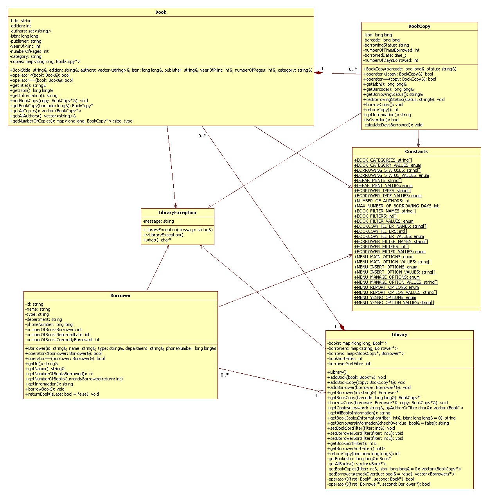

Programming Using C++
Library System
Technical Report
Introduction
- Student Name: Tran Tuan Anh
- Student ID: s3269999
- Student Name: Dang Quang Binh
- Student ID: s3274973
- Course: COSC2131 - Programming using C++
- Assignment #2: Library System
- Lecturer: Dang Trong Trinh
- Institute: RMIT International University Vietnam
This page will show a general technical knowledge of how to install the program as well as its basic implementation and class diagram
Installation
- First, to get the source, browse to the site https://mekong.rmit.edu.vn/~s3269999/cosc2131/assignment2/ and download the file Anh_Binh_assign2.zip.
- Then, open a terminal (on linux) and extract the archive with command: unzip Anh_Binh_assign2.zip. After that, move into src folder with command: cd src.
- Now, you are in the source folder. Let's compile the program by typing the following command to your terminal and press Enter: make. This will generate some object files (*.o) and an executable binary file library_system, which is our emulator start-up code.
- To run the program, use the command: ./library_system (if you are in the same folder of that library_system file) or /path/to/folder/library_system (if you are in a different folder (replace /path/to/folder/ with actual path).
C++ features and data structure
- STL Container and algorithms
- Map
- Used to store Books, Borrowers, BookCopy and current borrowing operation. Using map as an associative container storing element with key-value combination for the ease of getting the element with a specific provided information later.
- Map will help to get element easier and very flexible when the system need to get a specific element in the map. For example, with Map Book<long, Book*> to store Book ISBN and the Book pointer as a key-value pair, the system can get the Book very quickly with the provided ISBN rather than loop through other kind of container and compare every book ISBN to get needed book.
- Vector
- Used to store all copies of a book, all books or borrowers data in the library those do not need to get specific elements inside the container.
- Convenient to use for simple operation.
- Set
- Used to store unique object like borrowers or authors in an operation that should avoid the information being duplicating.
- For example, a borrower can borrow many books so the system may store information of that borrower multiple times. After getting borrower information, store them in a set will get rid of multiple storing.
- Sort algorithm is used to sort elements inside the Set with specific kind of filter.
- Exceptions
- Exceptions will be handled when invalid information occurs in the system to show users what's going wrong. Exception will be thrown when:
- Adding a book with existing ISBN
- Adding a book copy with existing barcode
- Adding a book copy with invalid barcode (10 first ISBN digit is wrong)
- Get a book with wrong ISBN
- Get a book copy with wrong barcode
- Return a book which is not borrowed
- Borrow a book which is not available in library (for example book is lost)
- Add a borrower with existing ID
- Get borrower with wrong ID
- Borrow a book copy which is currently borrowed
- With exception handling, errors will be easier to control and prevent the program from being crashed. For example crashing from wrong casting when the system expects a numeric command but user input a string.
- Operator overloading
- Used in Book and BookCopy class to compare Book and BookCopy object.
- Overload "<" and "==" operator to compare Book's isbn and BookCopy's barcode. Used in circumstance such as checking duplication insertion and sorting.
Implementation
The program contains:
- library_system.cpp: the main class where the program starts with showing the main menu and starting main loop. This class will get command from user and call coresponding function.
- Book.cpp, Book.h / BookCopy.cpp, BookCopy.h: Book class. It defines Book's, Book Copy's data members and basic functions like get information of book or book copy.
- Borrower.cpp, Borrower.h: Declares and defines Borrower data member and functions.
- Library.cpp, Library.h: contains Library main data members such as Map of books and borrowers. Functions to execute library's operators like add new books, add new borrowers, borrow a book and so on.
- utility.cpp, utility.h: utility functions. It's the library engine to process and contains other utility functions such as display menu and get user command, check valid input and compare string etc.
- LibraryException.cpp, LibraryException.h: exception class to show the appropriate warning output to users.
Class Diagram

End Of Assignment